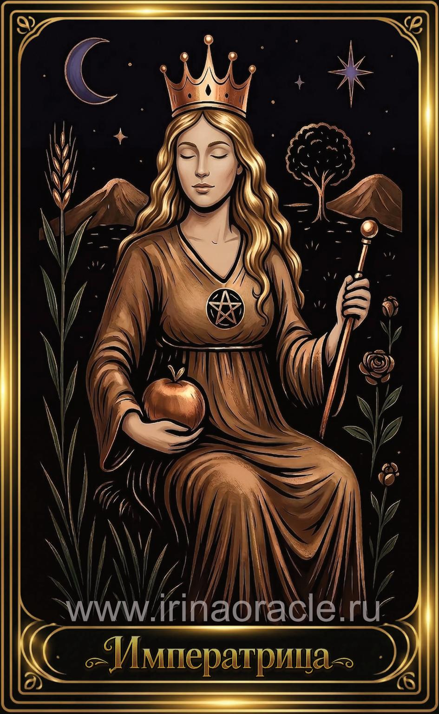

Императрица — значение карты Таро
Императрица — значение карты Таро

Императрица — это энергия изобилия, любви, творчества и роста. Она символизирует плодородие, заботу, гармонию и способность создавать красоту и благополучие вокруг себя. Это архетип Матери, Музы и Творца, который наполняет жизнь теплом, нежностью и процветанием.
Общее значение
Императрица указывает на период роста, созидания и раскрытия потенциала. Это время, когда идеи начинают приносить плоды, отношения становятся теплее, а жизнь — насыщеннее. Карта говорит о гармонии с собой и миром, о способности привлекать благоприятные обстоятельства.
Она напоминает: всё, что ты питаешь вниманием и любовью, начинает расти.
Любовь и отношения
В любви Императрица — одна из самых благоприятных карт. Она говорит о тепле, заботе, взаимности, чувственности и глубокой привязанности. Это отношения, в которых партнёры поддерживают друг друга и создают пространство любви.
В тени карта может указывать на излишнюю опеку, ревность или стремление контролировать через заботу. Важно сохранять баланс.
Работа и финансы
В работе Императрица указывает на творческие проекты, рост доходов, успешное развитие дела и благоприятные условия для новых начинаний. Это карта процветания, вдохновения и плодотворной деятельности.
В финансах она обещает стабильность, прибыль и улучшение материального положения. Главное — действовать с любовью к своему делу.
Здоровье
Императрица указывает на хорошее самочувствие, восстановление сил, гармонию тела и естественные процессы. Часто карта связана с женским здоровьем, гормональным балансом и репродуктивной системой.
Она также напоминает о важности отдыха, питания и заботы о себе.
Совет карты
Создавай. Заботься. Наполняй пространство любовью. Императрица советует проявлять мягкость, щедрость и внимание к себе и другим. Это время, когда важно доверять естественному ходу событий.
Позволь себе процветать и принимать изобилие, которое приходит в твою жизнь.
Теневая сторона
В тени Императрица проявляется как излишняя зависимость, стремление угодить всем, эмоциональная избыточность или погружение в комфорт в ущерб развитию.
Карта предупреждает: забота должна быть взаимной, а изобилие — осознанным.